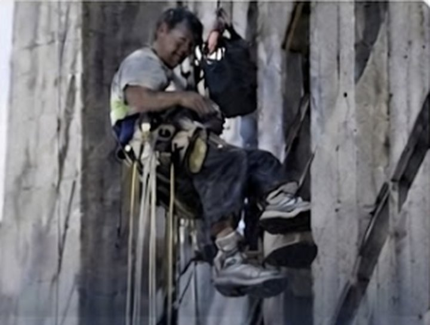
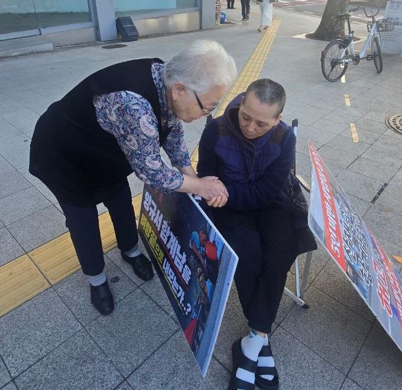
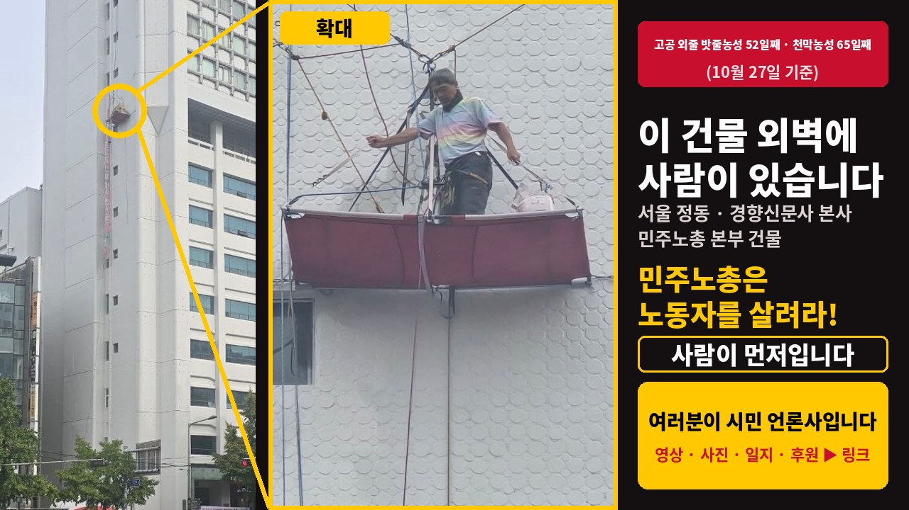
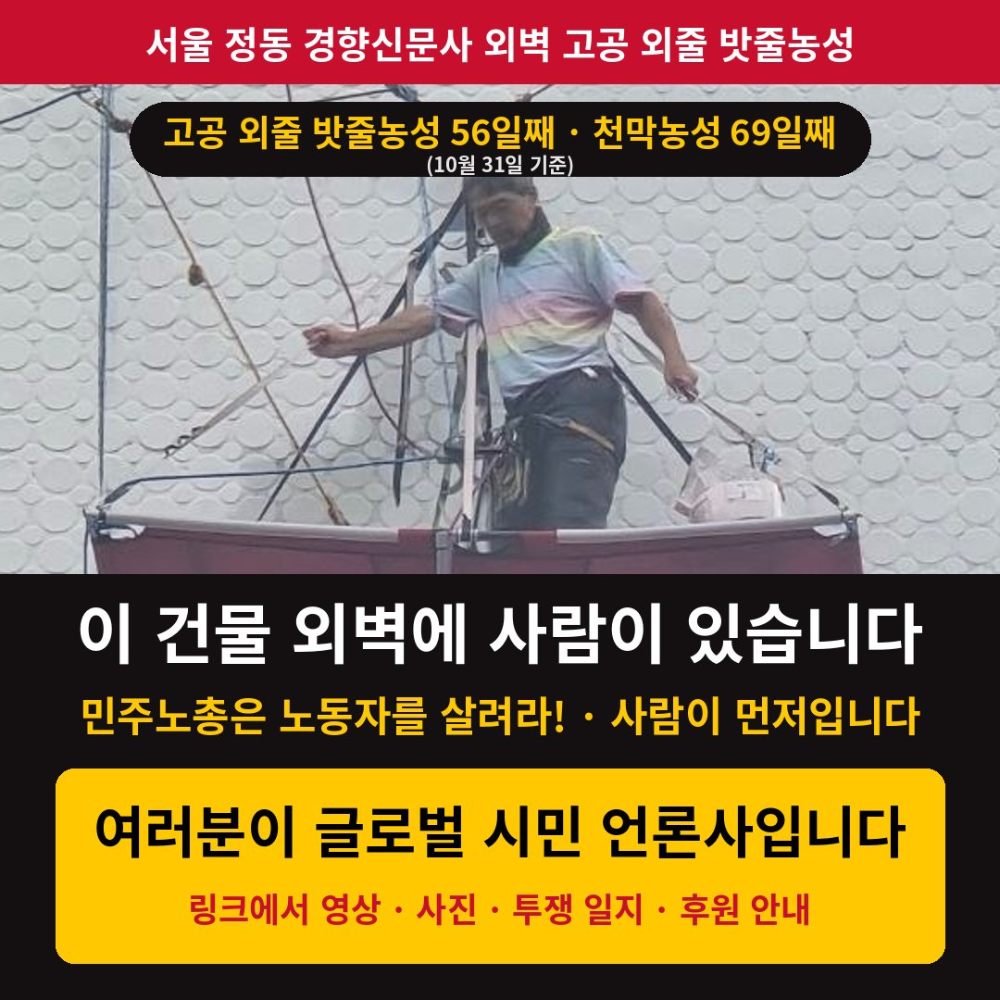
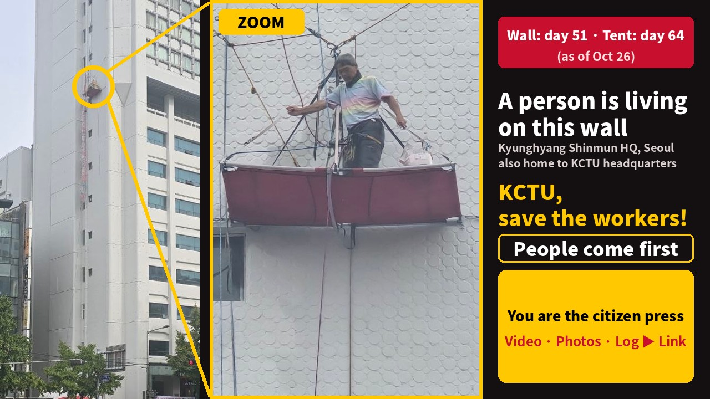
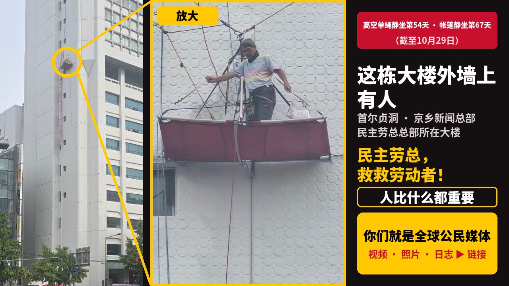

서울 정동 경향신문사 건물 외벽, 밧줄에 매달린 천 한 장 위에서 한 노동자가 지내고 있습니다. 비가 와도, 바람이 불어도 내려오지 않았습니다. 건물 앞 보도에서는 천막농성이 함께 이어지고 있습니다.
농성자들의 요구민주노총 상근자 5인 미만 해고자 복직
지금 현장은
후원하기
투쟁에 힘을 보태 주세요.
카카오뱅크 3333-25-8704515예금주: 함계남
고공 외줄 밧줄농성 2026. 9. 6. 시작천막농성 2026. 8. 24. 시작
고공 외줄 밧줄 단식농성 17일 마무리천막 단식농성 20일 마무리전태일 열사의 친동생 전태삼 선생님의 간곡한 권유로 양규서·함계남 노동자 부부 동지가 단식을 마쳤습니다. 고공 외줄 밧줄·천막 단식을 마친 뒤에도 고공 외줄 밧줄농성과 천막농성은 계속 진행 중입니다.
이 건물 외벽에 사람이 있습니다
민주노총은 노동자를 살려라!
사람이 먼저입니다

이 건물은 경향신문사 본사입니다. 같은 건물에 민주노총(전국민주노동조합총연맹) 본부가 있습니다.
민주노총은 조합원 100만 명이 넘는 한국 양대 노총 중 하나로, 노동자를 대변한다는 단체입니다. 민주노총 본부가 있는 이 건물(경향신문사 본사) 외벽에 해고된 노동자(함계남)의 남편 양규서 동지가 매달려 있습니다. 그는 현직 민주노총 공공운수노조 조직국장입니다. (연속 징계 3회: 4개월 · 6개월 · 6개월, 합계 16개월 무급)
이 건물에는 뮤지컬 〈페인터즈〉 공연장(경향아트힐)도 있습니다. 공연을 보러 오신 관광객 여러분, 바로 이 건물의 외벽입니다.
※ 이 안내는 해당 공연 및 제작사와 관계가 없습니다.
어린 친구들에게
여러분이 자라서 일하게 될 일터는 서로를 존중하는 곳이어야 합니다.
함계남 동지는 일하던 곳에서 직장 내 괴롭힘을 겪고, 결국 부당하게 해고되었다고 말합니다. 그 일을 바로잡으려고 부부가 천막과 건물 외벽에서 밤낮을 버티고 있습니다.
이 싸움은 누구도 일터에서 괴롭힘을 당하지 않는 세상, 여러분이 어른이 되었을 때 마음 놓고 일할 수 있는 세상을 만들기 위한 것입니다.
그래서 이 싸움은 ‘어른들의 희망’입니다.
매일의 투쟁 기록을 이곳에 남깁니다. 최신 소식이 맨 위에 있습니다.
※ 영상 속 일수는 2026. 10. 23. 촬영 기준입니다. 오늘 기준 일수는 맨 위에 표시됩니다.
“우리 내려와서 같이 밥 먹자”할머니의 소원은 단 하나입니다.

서울 정동 경향신문사 건물 외벽, 밧줄에 매달린 천 한 장 위에서 한 노동자가 지내고 있습니다. 비가 와도, 바람이 불어도 내려오지 않았습니다. 건물 앞 보도에서는 천막농성이 함께 이어지고 있습니다.
투쟁에 힘을 보태 주세요.
영상에 쓰인 노래를 처음부터 끝까지 들을 수 있습니다.
카카오톡은 아래 '문구 복사하기'를 누른 뒤 대화방에 붙여넣어 주세요. 인스타그램·틱톡은 링크 공유 버튼이 없어서, 버튼을 누르면 문구가 복사되고 앱이 열립니다. 아래 공유 이미지를 저장해 게시물을 만들고 문구를 붙여넣어 주세요.
버튼 하나면 됩니다. '공유 문구 복사'를 누르고 카톡·텔레그램·밴드·페이스북에 붙여넣으면, 아래 사진이 링크 미리보기로 자동으로 함께 나옵니다.
인스타그램·틱톡은 링크 미리보기가 없어서, 이미지를 따로 저장해 올려 주세요.


Single-rope sit-in began Sept 6, 2026Tent sit-in began Aug 24, 2026
Hunger strikes endedWall 17 days · Tent 20 daysAt the earnest urging of Mr. Jeon Tae-sam, younger brother of the martyr Jeon Tae-il, the worker couple Yang Gyu-seo and Ham Gye-nam ended their hunger strike. The sit-ins on the wall and in the tent are still going on.
A person is living on the wall of this building
KCTU, save the workers!
People come first
This building is the headquarters of the Kyunghyang Shinmun newspaper. It also houses the head office of the KCTU (Korean Confederation of Trade Unions).
The KCTU is one of Korea’s two national labor federations, with more than one million members, and says it speaks for workers. Hanging on the outer wall of the building that houses the KCTU headquarters (the Kyunghyang Shinmun headquarters) is Yang Gyu-seo, husband of the dismissed worker (Ham Gye-nam). He is himself a serving organizing director of the KCTU-affiliated Korean Public Service and Transport Workers’ Union. (Disciplined three times in a row: 4, 6 and 6 months — 16 months without pay in total)
This building is also home to the theater of the musical PAINTERS (Kyunghyang Art Hill). If you came to see the show, this is the outer wall of that very building.
This notice is not affiliated with the show or its producers.
To our young friends
The workplaces you will one day work in should be places where people respect one another.
Ham Gye-nam says she was harassed at work and, in the end, unfairly dismissed. To set this right, she and her husband are holding out day and night, in a tent and on the building’s outer wall.
This struggle is for a world where no one is bullied at work, so that when you grow up, you can work without fear.
That is why this struggle is called “The Hope of Grown-ups.”
A day-by-day record of the struggle. Newest first.
Day counts in the video are as of Oct 23, 2026. Today’s counts are shown at the top.
“Come down, let’s eat together.”She has just one wish.
On the outer wall of the Kyunghyang Shinmun building in Jeong-dong, Seoul, a worker is living on a sheet of fabric hung from ropes. Through rain and wind, he has not come down. On the sidewalk below, a tent sit-in continues alongside him.
Donations by Korean bank transfer:
International donation options will be added soon.
The song from the video, from start to finish.
For other apps, copy the link above and paste it.
One tap is enough. Tap ‘Copy share text’ and paste it into Telegram, WhatsApp, Facebook or X — the photo below appears automatically as the link preview.
Instagram and TikTok don’t show link previews, so save the image and post it there.

高空单绳静坐 2026年9月6日开始帐篷静坐 2026年8月24日开始
高空绝食 17 天后结束帐篷绝食 20 天后结束在全泰壹烈士的亲弟弟全泰三先生的恳切劝说下，劳动者夫妇 양규서（Yang Gyu-seo）、함계남（Ham Gye-nam）结束了绝食。绝食结束后，高空静坐和帐篷静坐仍在继续进行。
这栋大楼外墙上有人
民主劳总，救救劳动者！
人比什么都重要
这栋楼是《京乡新闻》总部。同一栋楼里还设有民主劳总（韩国全国民主劳动组合总联盟）总部。
民主劳总是拥有超过一百万会员的韩国两大工会联合会之一，自称代表劳动者。悬挂在民主劳总总部所在大楼（京乡新闻总部）外墙上的，是被解雇劳动者（Ham Gye-nam）的丈夫 Yang Gyu-seo（양규서）。他本人是民主劳总公共运输工会的现任组织局长。（连续受处分三次：4个月、6个月、6个月，合计16个月无薪）
这栋楼里还有音乐剧《PAINTERS》的剧场（京乡艺术山庄 Kyunghyang Art Hill）。来看演出的游客朋友们，这就是那栋楼的外墙。
本说明与该演出及制作方无关。
给小朋友们
将来你们工作的地方，应该是人与人互相尊重的地方。
Ham Gye-nam（함계남）说，她在工作的地方遭受了职场欺凌，最后被不当解雇。为了纠正这件事，夫妇俩在帐篷里和大楼外墙上日夜坚持。
这场抗争，是为了创造一个没有人在职场上被欺负的世界，让你们长大后可以安心工作。
所以，这场抗争叫做“大人们的希望”。
每天在这里记录抗争实况，最新消息在最上方。
视频中的天数以2026年10月23日拍摄时为准，今天的天数显示在页面顶部。
“下来吧，我们一起吃饭”奶奶的心愿只有一个。
在首尔贞洞京乡新闻社大楼的外墙上，一名劳动者住在一块用绳索吊起的布上。下雨也好，刮风也好，他都没有下来。大楼前的人行道上，帐篷静坐也在同时进行。
可通过韩国银行转账捐助：
暂不支持微信支付、支付宝。海外捐助方式将尽快公布。
视频中的歌曲，可以从头听到尾。
微信：请先复制上方链接，再粘贴到聊天中。
一键即可。点“复制分享文字”，粘贴到 Telegram、WhatsApp、Facebook、X，下方照片会自动作为链接预览显示。
Instagram、抖音/TikTok 没有链接预览，请另存图片后发布。
